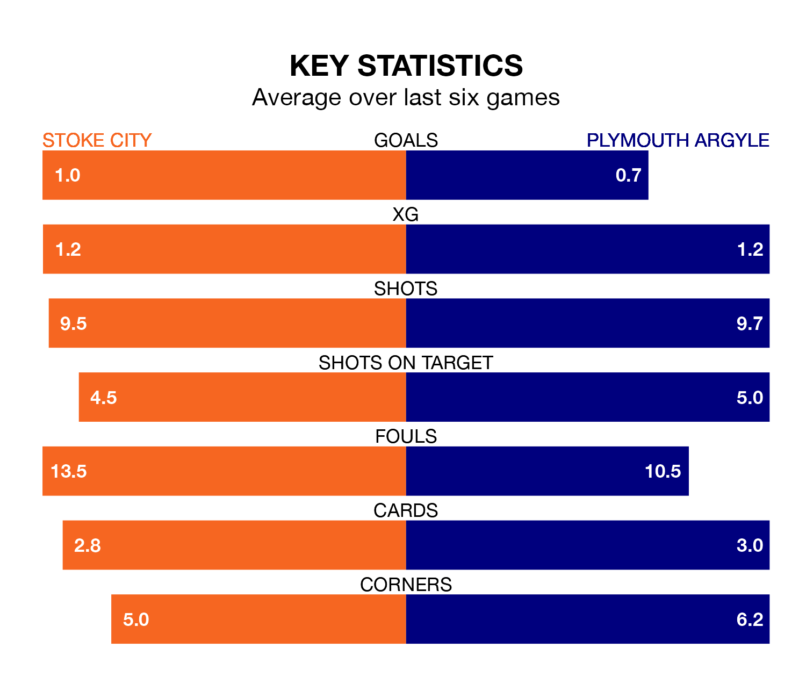

Plymouth Argyle travel to Stoke City on Saturday in EFL Championship.
The visitors come into the game on the back of a win in their last match, having beaten Leicester City 1-0 at home, with a goal from Mustapha Bundu.
The Potters, meanwhile, drew their last match, 1-1 against Sheffield Wednesday, with their goal scored by Luke Cundle.
In Morgan Whittaker, Plymouth have one of the league's sharpest shooters so far this season. He has notched 19 goals in 43 appearances, to sit third in the scoring charts.
His goal rate of one every 195 minutes is quicker than that of André Vidigal, Stoke's top scorer with a goal every 279 minutes, and a total of six goals in 28 games.
City are 20th in the table after 43 games, of which they have won 12 and drawn 11, earning 47 points.
Argyle are two places ahead of the Potters in 18th, with 12 wins and 12 draws putting them on 48 points.
With 41 goals in 43 games so far this season, the home side are scoring at below the league average rate with 1.0 goals per game. And they are conceding more than average, letting in 60 goals at a rate of 1.4 per game.
The Pilgrims, meanwhile, are average scorers, with 1.3 goals per game. They have conceded 1.5 goals per game.
Stoke are in disappointing form in EFL Championship, with one win and three draws from their last six games.
With two wins and a draw over that period, the visitors' form is slightly better – they have taken seven points from 18, compared to Stoke's six.
Updated: 11:31 (UTC), 15/04/24